A side project that unifies New Sales, Renewals, Customer Success, and Leadership into a single AI-assisted workspace — with a consistent experience, specialized features for each role, and clear lines between where humans stay in the loop and where AI works on its own.
Working prototype
Built with React and TypeScript. Sign in with SSO, pick a role, and explore the views, notes and notifications. Anything you change stays in your browser.
RFP agent demo: AI drafts, people approve
An RFP agent working on a fictional healthcare customer. It reads the RFP and the account analysis, searches a library of approved answers, checks pricing rules, and drafts every section, showing each step as it works. Each answer shows its sources and how fully the approved library covers it, and flags anything to check before sending. People ask for changes in plain language and approve each section; the response is assembled only after everything is approved, and nothing is sent to the customer from the tool. Choose “Load the example draft” to replay a saved run step by step.
Problem
Each role worked in its own console, so there was no consistent, unified workflow. Deals, customer information, and context were lost every time work was handed from one role to another, and sellers jumped between separate tools for assets, customer data, deal history, CPQ, and RFPs.
Propose one integrated tool for new sales, renewals, customer success, and the leaders who manage them. Role-specific features differ slightly, but the experience and tooling stay consistent.
Workflow
SSO auto-login or manual ID and password.
The role decides the starting screen and how it can be customized.
Permissions and layout preferences.
The role is remembered; change it anytime in Settings.
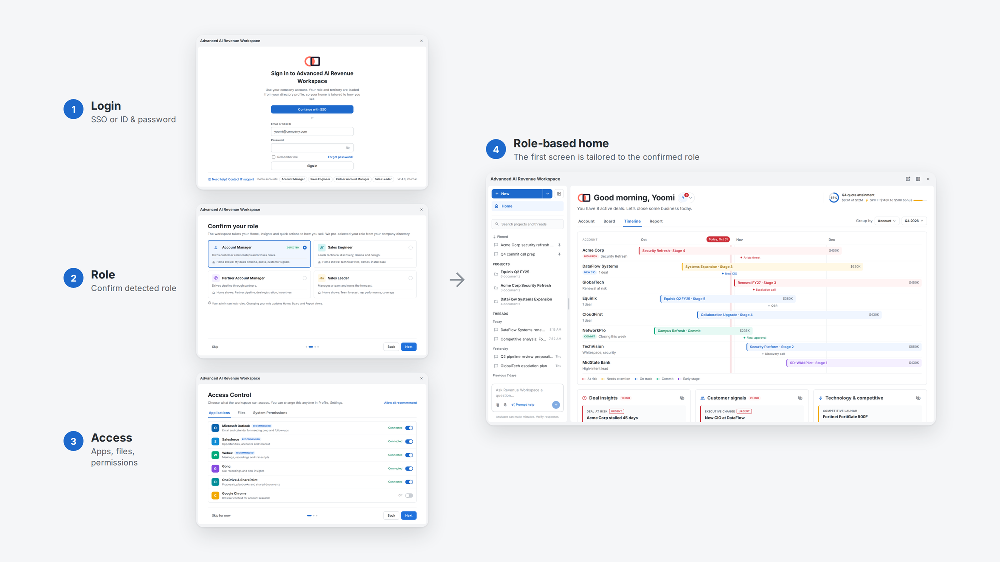
Information Architecture
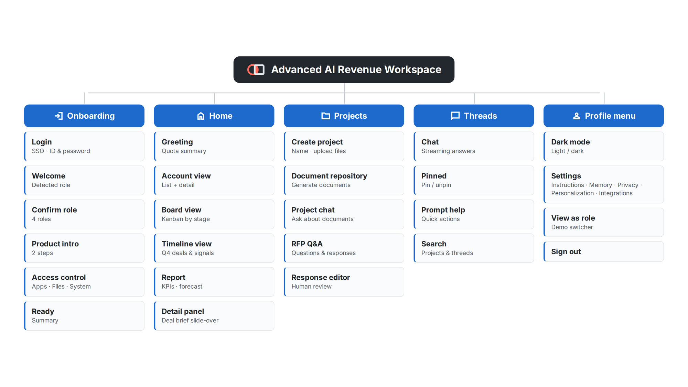
Ideation
I focused on how to manage deals and projects visually and how to help sellers set priorities, while keeping the look and feel of the existing tools so the new workspace would feel familiar. Merging the separate role-based tools into one gave consistent usability across the whole product cycle. I also reviewed the design against WCAG so it can be used by everyone.
Board and timeline views make it clear what to do first and how far along each item is.
The look and feel of existing tools is preserved while usability is unified.
WCAG reviewed for both design and code, in light and dark mode.
Design Points
Design Point 1
Users can sign in automatically with SSO or manually with an ID and password. A short description under each option explains what it does, so nobody has to guess which to choose.
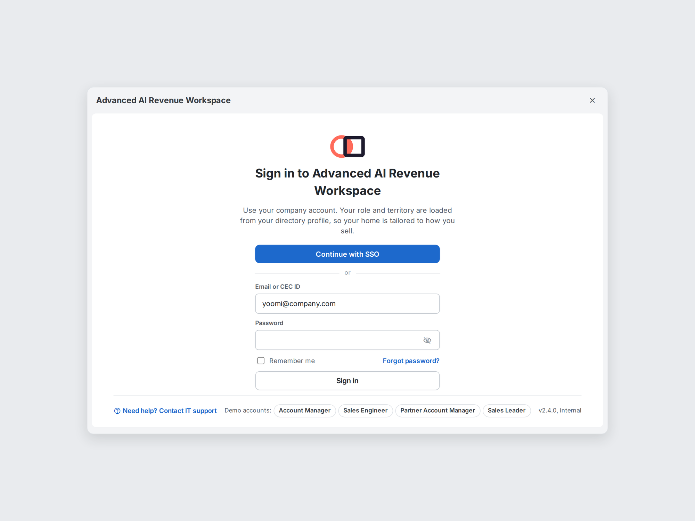
Design Point 2
Role is the most important choice in the whole flow. It determines the first screen and what can be customized. After the first login the role is remembered and can be changed in Settings. Layouts are also customizable.
Users make the choice once, then every login lands them straight in their own context.
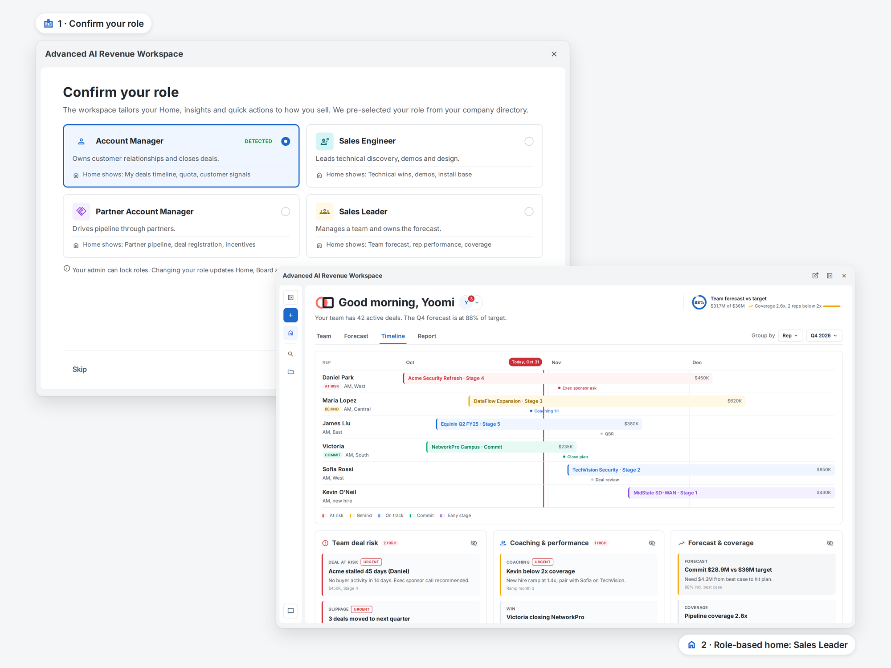
Design Point 3
Customer Success used to live in a separate tool. Bringing it into the same workspace lets every role in the product cycle communicate and see the same customer with full transparency.
Sellers can contact customers directly from the AI analysis, and update and share follow-up notes and work notes, which saves time lost in handoffs. For customers, it feels like one consistent service.
Contacts for every role are organized in one place. That gives better visibility on every deal and helps keep connections with customers who might otherwise be lost when a deal is lost.
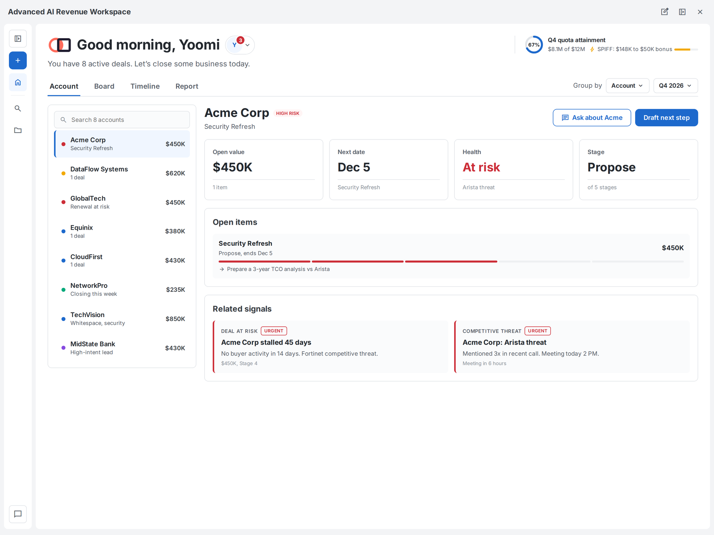
Design Point 4
A Kanban board shows each seller's workflow in one view: what has priority and how far each deal or project has progressed. A default workflow template is provided, and users can build their own to fit how they work.
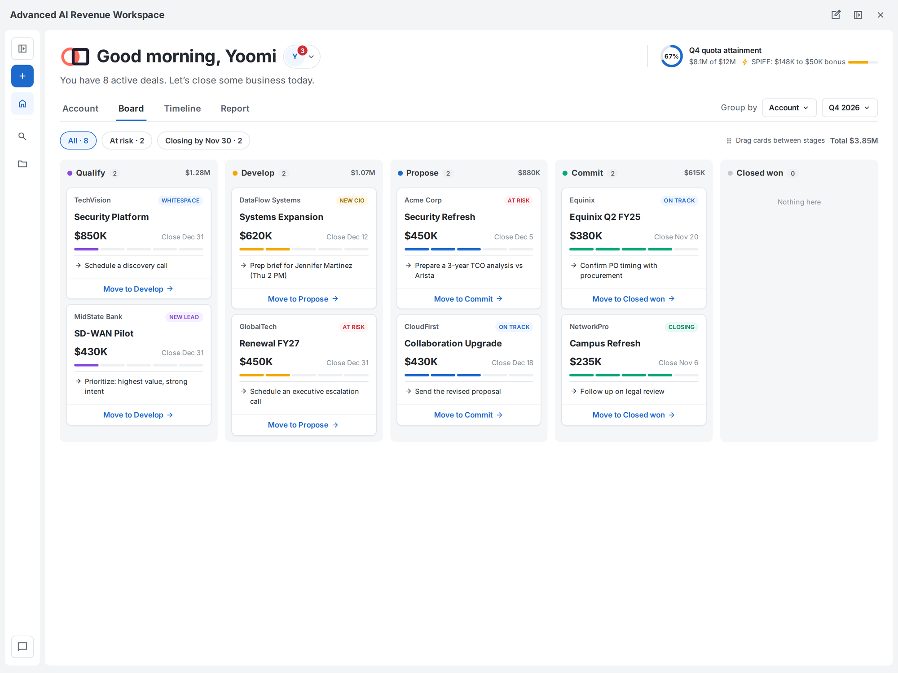
Design Point 5
Seeing deal and project timelines together gives a visual cue for what to handle urgently. The timeline connects to the AI, so users can set up autonomous actions based on it. A calendar scheduling feature can be switched on or off, so meeting follow-ups can also be done in the tool.
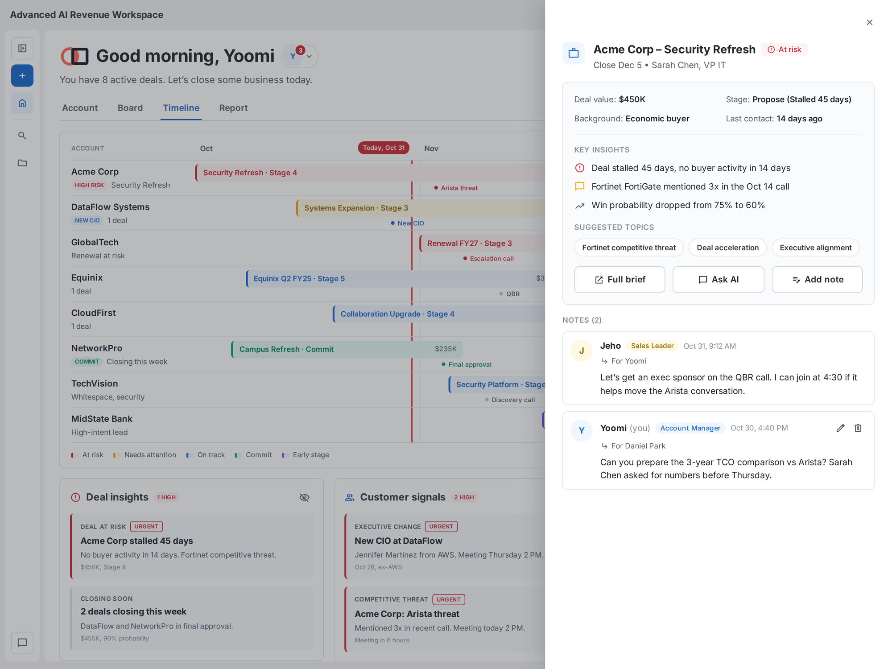
Design Point 6
Reporting didn't exist in the previous tools. Leaders get an at-a-glance view of attainment and can give advice, which widens their role. Individual sellers no longer spend time building separate reports, and a consistent template saves time on both sides.
Sellers stay motivated by tracking progress against goals. Incentives are visible in one place, so they can see how each deal or project contributes.
Clear goal setting, less report-building time for sellers, and one consolidated view of the team for leaders.
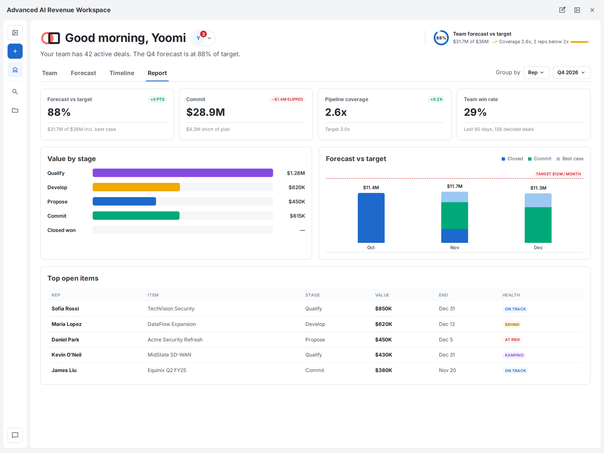
Design Point 7
Deal context used to live in personal notes, email, and chat, so each role saw a different version of the story. Notes now live on the deal itself. In any deal’s detail panel, next to Full brief and Ask AI, people can add a note and choose who it’s for.
Every note shows who wrote it, their role, the date and time, and who it’s addressed to, so a seller, a sales engineer, Customer Success, and a leader read the same context in the same format. Authors can edit or delete their own notes, and edits are marked. A Notes page collects the full history, with filters for notes left for me and notes I wrote.
Handoffs carry their context with them. The next person on the deal sees what was agreed, by whom, and when, without searching other tools.
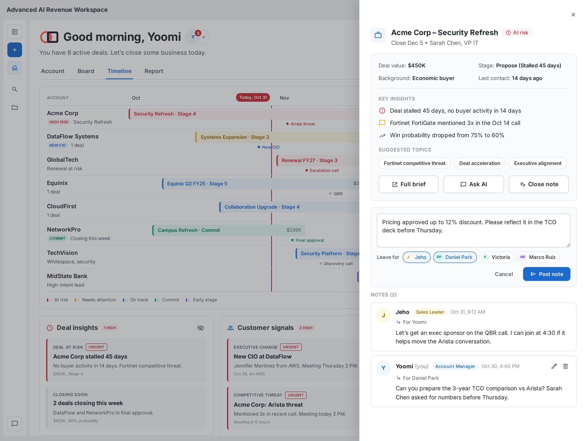
Design Point 8
Shared notes only help if people know a new one arrived. A badge on the profile avatar and in the menu shows the unread count, and the Notifications page lists replies to notes and deal changes, such as a deal moving to Commit.
Opening a notification marks it as read and goes straight to the note or deal it’s about. Mark all as read clears the list in one step.
Sellers learn about updates on their deals as they happen, instead of discovering them in the next meeting.
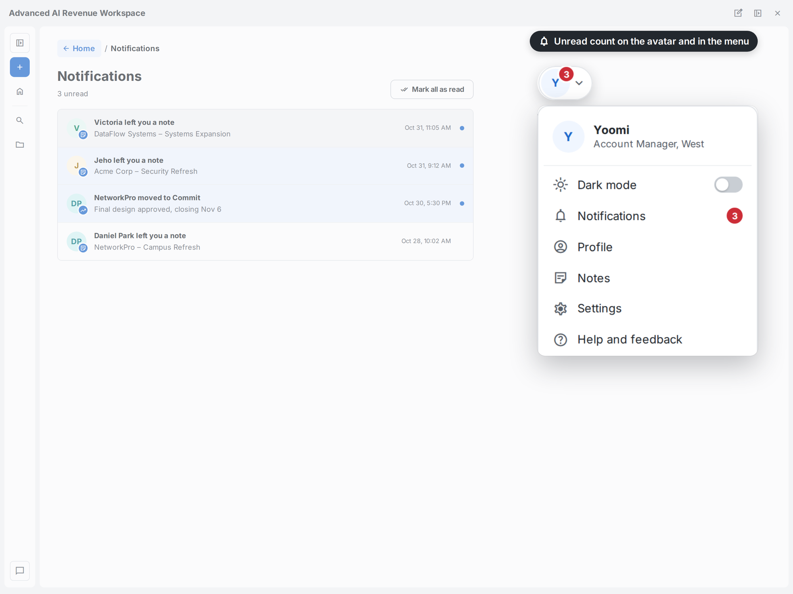
Design Point 9
The AI provides insights for each deal and project, and a prompt-help feature lets users go deeper or look up extra information. The AI can also analyze products and prepare what a customer is likely to need, so sellers have material for their pitch.
Even when the AI works on its own, people can review the results or check the underlying resources. That makes the analysis something sellers can trust.
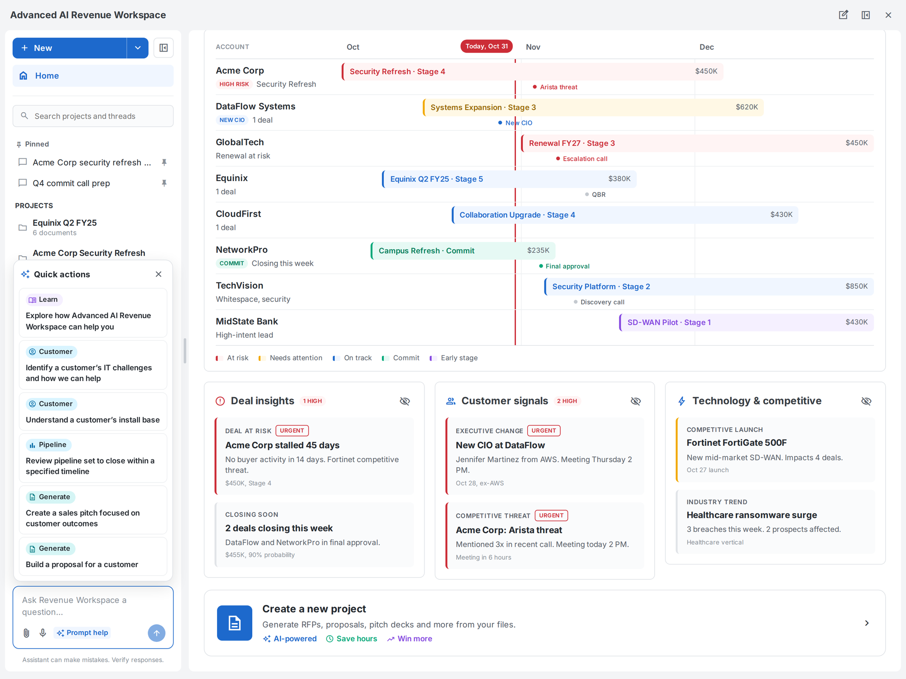
Design Point 10
The AI drafts RFPs and sales pitches automatically, and a person reviews and finalizes them. Human involvement is built in at key points, finding a middle ground between fully autonomous and fully manual.
Scattered assets, customer information, deal history, CPQ, and RFPs are gathered in one place, so sellers don't need to jump between tools.
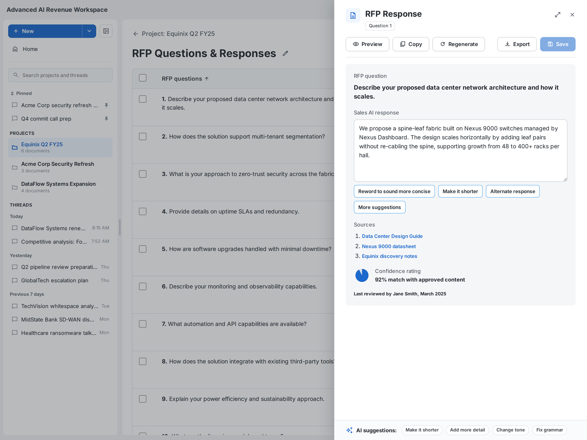
Human in the Loop
For work such as RFPs and sales pitches, AI prepares the draft and a person steps in at key points to review and complete it.
For autonomous analysis, AI works on its own, but results can be reviewed and traced to their resources, so the analysis can be trusted.
Accessibility
Every screen works in both light and dark mode, and I used the theme work to make accessibility a requirement rather than a final check. Colors are defined once as design tokens with a light and a dark value, so Figma and the React code share one palette. People switch themes from the profile menu, or let it follow their system setting.
I learned how to review WCAG from both a UX and a development perspective and checked contrast in both modes against WCAG AA, which asks for 4.5:1 for normal text. Body text, secondary text, and buttons pass in both themes, with body text at 14.9:1 in light and 13.3:1 in dark. Status colors were retuned for dark mode instead of reused, so the “at risk” red stays readable at 6.7:1, and the logo got a dark-mode version so its square doesn’t disappear on a dark background.
Small captions (3.2:1) and the light-mode amber label (4.47:1) fall just short of 4.5:1 and are queued for the next pass. Checking the built interface, not only the Figma file, is what surfaced them.
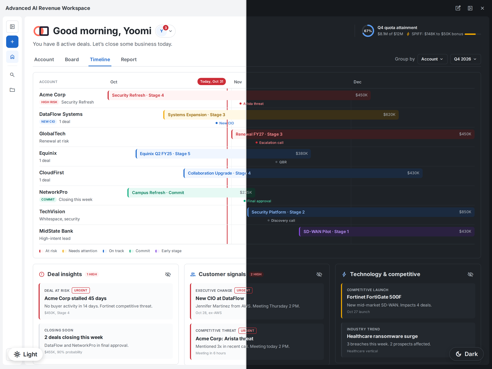
Branding
The name and logo are based on the shapes of the Korean letters ㅇ and ㅁ from “yoomi.” The colors were chosen to feel trustworthy for an AI product while meeting WCAG, and I defined two variations, light mode and dark mode, and checked both against WCAG.
The intro interaction opens like a door at the last letter. Stepping through to see a bigger world represents taking in new information.
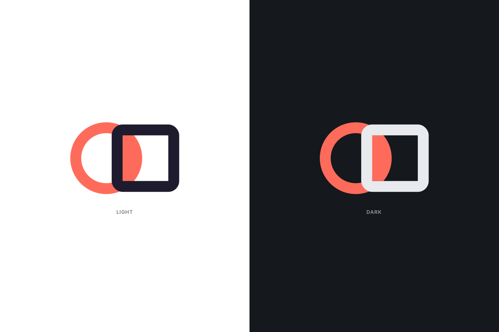
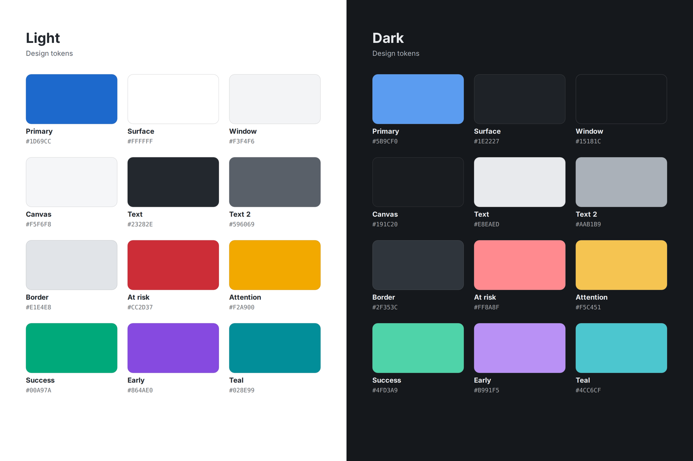
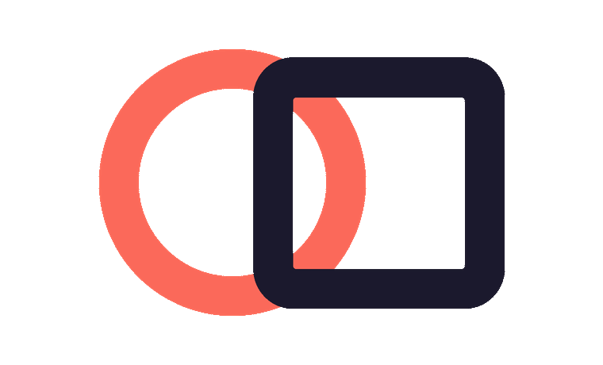
The goal wasn't just to merge consoles. It was to give people across the product cycle a shared view of the customer, with AI doing the heavy lifting and humans owning the decisions.
What I Learned
Using AI tools made it much faster to bring ideas to life. Most of my time went into UX planning: how to develop the idea, how to structure the information architecture, and which workflows to provide.
I didn't know how to code before this project, so I asked Claude to write the code. I ran it and studied just enough to know where to look when something broke.
Setting the goal and direction is the most important part of any project, and that is still the human's role. AI supported much of the execution, which let me finish in a short time.
Deep expertise in one field matters, but I also found that broad, shallow knowledge across many fields is a very useful skill when working with AI.